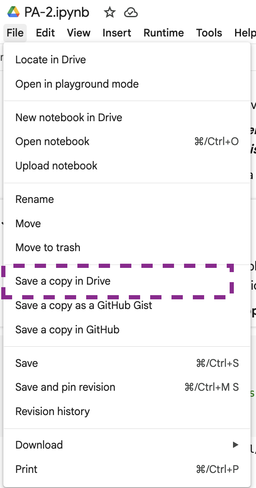

colleges |>
filter(REGION == 5) |>
mutate(TUITION_DIFF = TUITIONFEE_OUT - TUITIONFEE_IN)Data Wrangling with dplyr
Tuesday, September 30
Today we will…
- Warm-up for
dplyrpractice activity (40-minutes) - Set-up for the practice activity (5-minutes)
- Review pair programming norms
- Find your partner!
- Take a 10-minute break
- Complete the practice activity (60-minutes)
Data Wrangling with dplyr
Mathlink Activity
We’re going to explore some key dplyr verbs using manipulatives:
filter()– select rows based on their valuesselect()– select columnsmutate()– add new columns or change existing columnssummarize()– perform summary operations on columnsgroup_by()– facilitate group-wise operations
. . .
Use the pipe operator (|> or %>%) to chain together data wrangling operations.
The Pipe Operator
With dplyr, your code should read like a sentence.
- The data is the primary object in your sentence, so it should come first in your code.
. . .
Data Comes First!
You can choose whether to:
declare your data as the first argument of the function
filter(.data = colleges, REGION == 5) |>
mutate(TUITION_DIFF = TUITIONFEE_OUT - TUITIONFEE_IN). . .
or
pipe your data into the first argument of the function
colleges |>
filter(REGION == 5) |>
mutate(TUITION_DIFF = TUITIONFEE_OUT - TUITIONFEE_IN)Data Frame
Data Frame
How many rows?
Data Frame
How many columns?
Observations
Here is one observation:
. . .
Looking at the column green, how many sides does the observation have?
filter
filter
include rows based on one or more logical statements
With Your Data Frame
filter it (only include rows where)
- the red column only includes observations with three sides (triangles)
OR
- the green column only includes observations with more than four sides (pentagons, hexagons)
How would we write this as R code?
the red column only includes observations with three sides (triangles) OR the green column only includes observations with more than four sides (pentagons, hexagons)


How would we write this as R code?
data |>
filter(red == 3 |
green > 4)“Take the
dataand then filter it to only includeredobservations with 3 sides orgreenobservations with 4 or more sides.”
Changing from OR to AND
What if we wanted observations where the red column had three sides AND the green column had four or more sides?
How would the code change?
Default is AND
data |>
filter(red == 3,
green > 4)
the default in filter() is the AND condition
Why not use &?
If a , is equivalent to an & why not just use a &?
Well, with a lot of &s your code can get hard to read…
data |>
filter(red == 3 & green > 4 & orange >= 3). . .
So instead we use commas.
data |>
filter(red == 3,
green > 4,
orange >= 3)select
select
include columns based on one or more logical statements
With Your Data Frame
data |>
select(red,
yellow,
green)With Your Data Frame
data |>
select(-green)mutate
mutate
create new columns or change existing columns
With Your Data Frame
data |>
mutate(
purple = c(4, 4, 5)
)if_else(condition, true, false)
conditionis a logical test (or combination of logical tests)trueis the value output if the logical test is found to beTRUEfalseis the value output if the logical test is found to beFALSE
With Your Data Frame
data |>
mutate(
orange = ifelse(blue == 6, 4, 3)
)With Your Data Frame
data |>
mutate(orange =
ifelse(blue == 6, 4, 3),
green = orange + 1)arrange()
Organize the rows of the data in order of a particular variable.
With Your Data Frame
data |>
arrange(green). . .
What order does arrange() use as default?
arrange(): Descending Order
Default is ascending order…
…but can add desc() to get descending order!
data |>
arrange(
desc(green)
)arrange() + filter()
These functions implicitly arrange the data before slicing it (selecting rows).
slice_min()– select rows with the lowest value(s) of a variableslice_max()– select rows with the highest value(s) of a variable
With Your Data Frame
data |>
slice_max(green, n = 2)summarize
summarize
compute a table of summaries
With Your Data Frame
data |>
summarize(
max(purple)
)With Your Data Frame
data |>
summarize(
max(red),
max(blue),
min(orange)
)group_by
group_by
put rows into groups based on values in column(s)
With Your Data Frame
data |>
group_by(blue) |>
summarize(
max(red)
)With Your Data Frame
data |>
group_by(blue) |>
summarize(
min(red),
max(green)
)With Your Data Frame
data |>
group_by(orange, purple) |>
summarize(
min(blue)
)Combine operations!
data |>
filter(blue > 3) |>
select(red, yellow, blue)|>
mutate(green = blue - 1)10-minute break
PA 3: Identify the Mystery College
Today you will use the dplyr package to clean some data and then use that cleaned data to figure out what college Ephelia has been accepted to.

Finding Ephelia’s College
This activity will require knowledge of:
- debugging code errors
- function syntax
- logical comparisons
- identifying what actions need to be taken
- locating what dplyr verb(s) can accomplish this task
- chaining steps together with the pipe operator
![This image is a comic illustration titled 'debugging' featuring a series of 10 round green characters with various facial expressions and captions describing the stages of debugging code. The first character is smiling confidently with the caption 'I got this.' The second character has a neutral, confused expression with the caption 'Huh. Really thought that was it.' The third character looks puzzled and silent, captioned '(...).' The fourth character looks annoyed, with the caption 'Fine. Restarting.' The fifth character is angry and blushing, captioned 'OH WTF.' The sixth character is having a meltdown, looking wild-eyed and frazzled with the caption 'Zombie meltdown.' The seventh character looks exhausted and sleepy, drooling a bit, captioned with '...' The eighth character has a lightbulb above its head and a hopeful expression, captioned 'A NEW HOPE!' The ninth character looks determined, typing on a keyboard with a caption of '[insert awesome theme song].' Finally, the tenth character is joyful and celebrating with confetti, captioned 'I love CODING' The illustration humorously captures the emotional rollercoaster of debugging code.](images/debugging_horst.png)
. . .
None of us have all these abilities. Each of us has some of these abilities.
dplyr Resources
Every of you should have a dplyr cheatsheet in your coursepack!
On the Front
- Column 1: grouped summaries (
group_by()+summarize()) - Column 2:
filter()ing values with logical comparisons - Column 3:
select()ing andmutate()ing variables
On the Back
- Column 2: summary functions you might like to use with
summarize()

Task Card
Every group should have a task card! These cards remind you of the expectations for each role and the collaborative norms we agree to.
Pair Programming Expectations
During your collaboration, you and your partner will alternate between two roles:
. . .
Developer
- Reads prompt and ensures Coder understands what is being asked.
- Types the code specified by the Coder into the Quarto document.
- Runs the code provided by the Coder.
- Works with Coder to debug the code.
- Evaluates the output.
- Works with Coder to write code comments.
Coder
- Reads out instructions or prompts
- Directs the Developer what to type.
- Talks with Developer about their ideas.
- Manages resources (e.g., cheatsheets, textbook, slides).
- Works with Developer to debug the code.
- Works with Developer to write code comments.
Opening the Practice Activity in Google Colab
The partner whose birthday is closest to January 1st starts as the Developer! The Developer needs to:
- Click on the Practice Activity 3 link from Canvas
- Log-in to your Google account
- Make a copy of the Colab notebook

Sharing with Your Partner
Once you have your copy, you need to:
- Share your copy with your partner’s Google account
- Make sure the Coder can open the file
- The Developer should plug their laptop into the monitor
- The Coder should close their computer
- Get started!

Why are we switching?
Throughout the activity you will swap roles—the Developer will become the Coder, and the Coder will become the Developer.
. . .
We are alternating roles so everyone:
- has the chance to apply their coding skills
- practices talking through their code
- has the opportunity to explain their thinking
External Resources
During the Practice Activity, you are not permitted to use Google or ChatGPT for help.
You are permitted to use:
- the
dplyrcheatsheet, - the course textbook, and
- the course slides.
Submission
Submit the full name of the college Ephelia will attend to the Canvas Quiz.
- Each person will input the full name of the college in the PA3 Canvas quiz.
- The person who last occupied the role of Developer will print the notebook as a PDF and submit the PDF for the group.
- Only one submission per group!